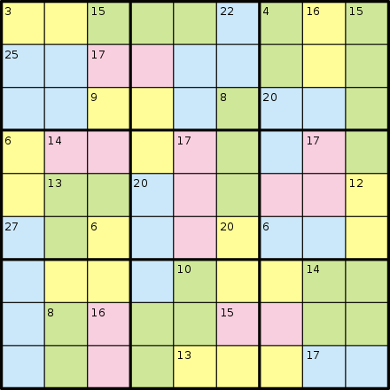

Killer sudoku (also killer su doku, sumdoku, sum doku, sumoku, addoku, or samunamupure) is a puzzle that combines elements of sudoku and kakuro. Despite the name, the simpler killer sudokus can be easier to solve than regular sudokus, depending on the solver's skill at mental arithmetic; the hardest ones, however, can take hours to crack.
A typical problem is shown on the right, using colors to define the groups of cells. More often, puzzles are printed in black and white, with thin dotted lines used to outline the "cages" (see below for terminology).